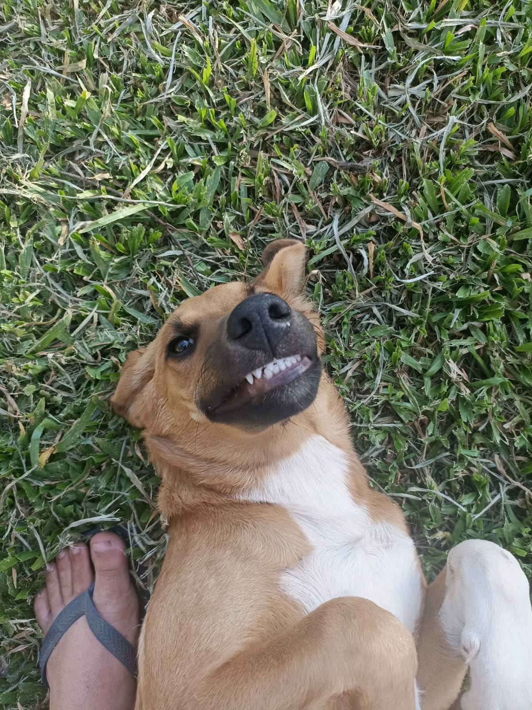
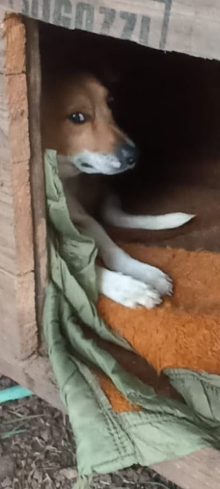
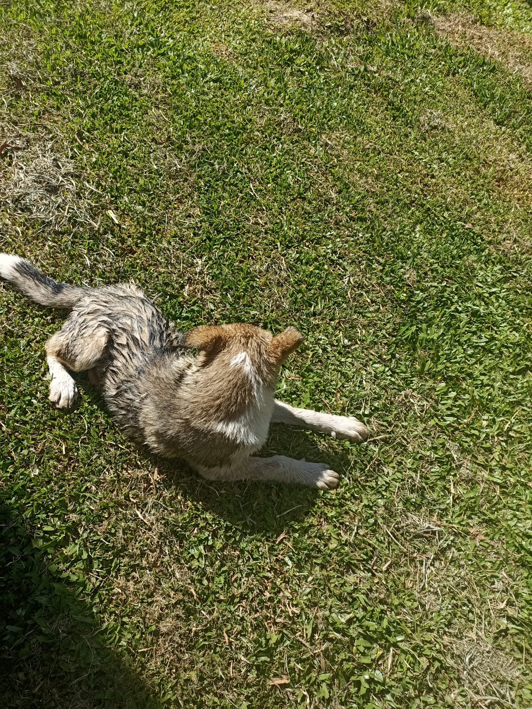
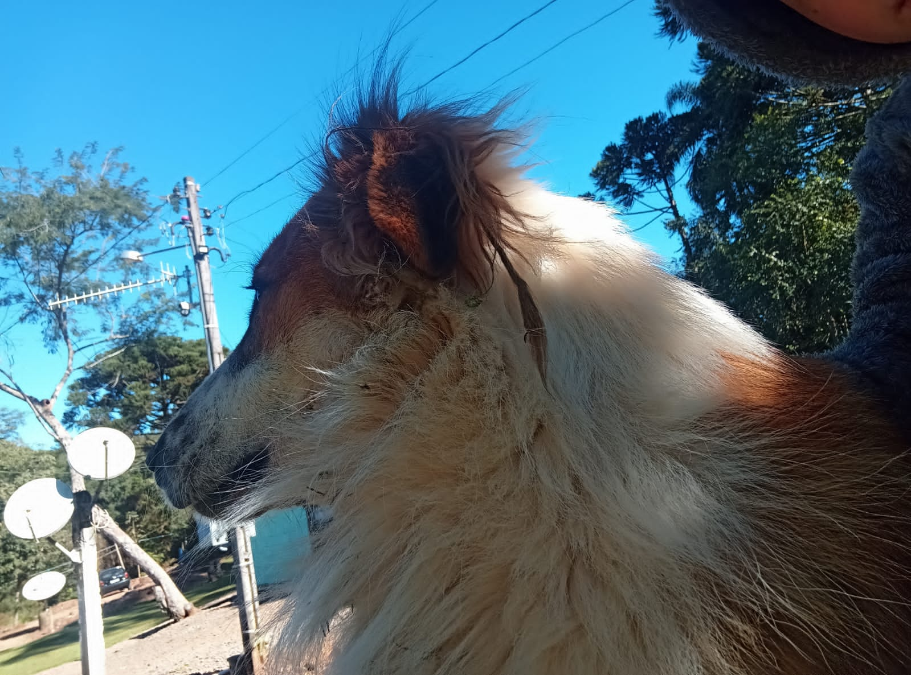

Pets
Meus Cães: Energia pura e bagunça diária
Enquanto a Murisca prefere e pode ficar dentro de casa os cachorros adoram e só podem ficar la fora, eles tem muitooo espaço. Adoram fazer arte e baderna, o Thor, o maior e mais bananão foge e nós temos que buscar ele de carro por que ele se perde. O bolinha é velho e gordo, nenhum pode com ele, mesmo sendo o menor. O Lobinho é o mais novo, bobalhão e querido mas não aceita estranhos! Ja a Tibursia [o nome coitada] é bem desconfiada, ela apareceu la em casa um dia e mora la agora.
Fotos aleatórias deles




